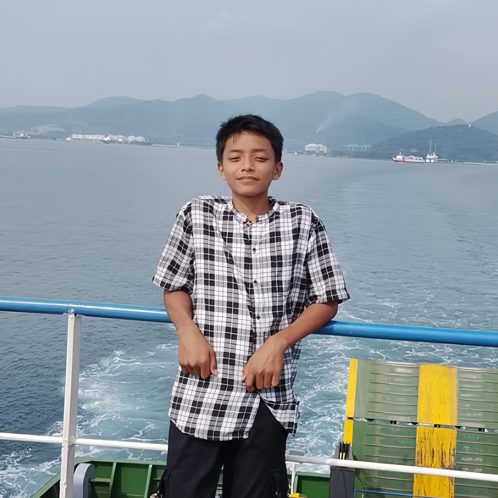

Pelajar, peminat teknologi & desain. Halaman ini berisi biodata lengkap dan sedikit cerita singkat tentang saya.

Saya, Fahri Darmawan, Saya seorang pelajar dengan minat besar pada desain dan editing, dan saya ingin terus mengembangkan kemampuan di bidang yang saya Sukai.
| Nama | : Fahri Darmawan |
| Tempat, Tgl Lahir | : Purbasari, 09 Juni 2009 |
| Jenis Kelamin | : Laki-laki |
| Agama | : Islam |
| Alamat | : Beringin , JL. Medan KM.10 , Sinaksak |
| NISN | : 3095270837 |
| Hobi | : Desain, Editing |
| Cita-cita | : Programmer / Desainer |